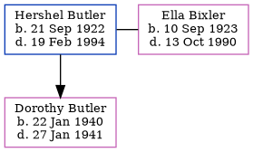

Hershel Henry Butler 1922 - 1994
[ Home ] | [ Calendar ] | [ Surnames Index ] | [ Errors ] | [ Family History ]Hershel Butler, the husband of Ella Louise Bixler (the fifth cousin once-removed on the mother's side of Nigel Horne), was born in Clay City, Clay, Indiana, USA on 21 Sept 19221,2 and married Ella (with whom he had 1 child, Dorothy Louise) in Brazil, Clay, Indiana, USA on 4 Oct 19394. On 1 Apr 1940, he was living in Morgan, Owen, Indiana5.
He died on 19 Feb 1994 in Harrells, Bladen, North Carolina, USA1,3.
Children
- Dorothy Louise was born on 22 Jan 1940
Citations
- Social Security Death Index - Findmypast
- United States Marriages - Findmypast
- North Carolina, Deaths, 1931-1994 - Findmypast
- Indiana, Marriages, 1810-2001
- US Census 1940 - Findmypast (was age 17 and the head of the household)
Media
United States Marriages - FS/MAR/40537261/1
Social Security Death Index - USBMD/SSDI/311180656
North Carolina, Deaths, 1931-1994 - R_20621933800
Family Tree
Map
Generated by ged2site. Last updated on Jul 3, 2024